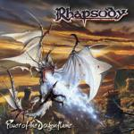

|
|
||
Rhapsody : Power of the Dragonflame (2002) |
|

http://www.mightyrhapsody.com |
1. In Tenebris 1:28 |
9.2/10 |
|
Vuelve la que seguramente es la banda de metal italiano con más renombre internacional, y los reyes indiscutibles del power metal sinfónico. Rhapsody presenta en su último trabajo, "Power of the Dragonflame" otro fantástico disco cargado de potencia, velocidad, pompa y coros, que narra la última parte de las Crónicas de Algalord, y que de nuevo deleitará a los muchos fans de esta banda italiana. Voy a destacar también la presentación del disco, con unas ilustraciones fantásticas cargadas de detalles, y un libreto con las letras y la narración de la última parte de las Crónicas de Algalord elaborado y muy bien maquetado. "In Tenebris" es otra de las típicas intros de Rhapsody, pomposa y recargada, pero sobrecogedora y magnífica. De "Knightriders of Doom" se puede decir que es una de las mejores canciones de Rhapsody: ritmo trepidante, base melódica elaborada sobre los teclados pero reforzada por las guitarras, estribillo pegadizo, y coros absolutamente majestuosos. "Power of the Dragonflame" es algo más contundente, con guitarras más presentes, de nuevo de ritmo vertiginoso y con la voz de Fabio Lione en un tono algo más agresivo. Completan esta canción otro fantástico estribillo y unos coros realmente señoriales. El cuarto corte, "The March of the Swordmaster", viene con sonidos medievales y un ritmo más tranquilo, aunque marcado y con cambios. Coros más agresivos y un tono más oscuro definen bien este tema. "When Demons Awake" es una de las canciones más duras de Rhapsody. El doble bombo le otorga velocidad, y las guitarras un tono cortante, pero son las voces, ásperas y tenebrosas las que crean la atmósfera, tétrica y opresiva. Los coros del estribillo sin embargo aportan brillantez y contraste con el resto de la canción. En "Agony is my Name" volvemos a tener un tempo muy rápido, un interesante trabajo vocal, que incluye distintos coros y voces femeninas, y otro estribillo memorable. La séptima canción, "Lamento Eroico", es una balada cantada en italiano, con algunos momentos realmente emocionantes y Fabio Lione cantando algunas porciones en un estilo operístico bastante distinto de lo habitual en él. Con "Steelgods of the Last Apocalypse" recuperamos la velocidad aunque la base melódica no sea, esta vez, demasiado contundente. También encontramos cambios de ritmo, coros, y una de las mejores partes instrumentales del álbum. "The Pride of the Tyrant" es de tempo algo menos rápido y con marcados cambios, pero lo mejor de este tema es el estribillo, quizás el más melodioso de todo este disco. El último tema, "Gargoyles, Angels of Darkness" es un temazo, largo, épico y con tres partes distintas. Tras una introducción tocada con una guitarra clásica, comienza la primera parte, "Angeli di Pietra Mistica", tiene un tono algo oscuro, y un estribillo a coro fabuloso. Una segunda parte instrumental, "Warlord's Last Challenge", rápida, con aires orquestales pero de indudable heavy metal, enlaza con la última, "...and the Legend ends...". Aquí encontramos un complejo final, con distintos ritmos, texturas, y tonos, coros épicos y voces narrativas, que concluye las crónicas de Algalord. |
||
Rubén Béjar |
||